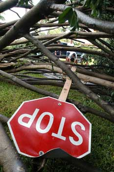
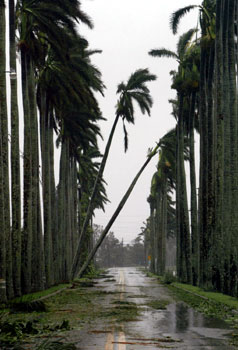

- Title Page
- Introduction
- Investigative Reporting at the Sun-Sentinel
- Storms Galore
- The Federal Emergency Management Agency
- Raising Questions
- Going to Print
- Waiting for Records
- Into the Neighborhoods
- A Morning Meeting
- The Next Story
- Inspectors
- The Data Arrives
- Results and Sources
- Criminals
- Putting the Pieces Together
- Nationwide?
Storms Galore
 © Sun-Sentinel 2004 In the late summer and early fall of 2004, Florida was hit by a record four hurricanes in six weeks. Hurricane Charley, the first, made landfall in Southwest Florida on August 13; Hurricane Frances struck the other side of the state a few weeks later, on September 5. Hurricanes Ivan and Jeanne followed on September 16 and 26, the former striking Alabama before moving through Florida’s Gulf Coast and the latter making landfall in almost exactly the same place as Hurricane Frances.
In early September, as Frances spun away and Florida braced for more hurricanes, Investigative Reporter Kestin considered options for long-term enterprise stories tied to the storms. In her investigative work, she often explored a particular facet of a breaking news event. “If it’s a bridge collapse,” she explains, “you look at the construction records, you look at the other bridges, the safety records, the maintenance records—are they really being inspected?” In general, she sought to expand on consequential stories already unfolding.
 © Sun-Sentinel 2004 She discarded what she thought of as the “obvious” story of contractors overcharging for repairs which, she says, “you always have after hurricanes and disasters.” She spent several days calling roofing associations and insurance companies, asking what patterns were emerging. She also considered examining property damage in light of new building regulations instituted after Hurricane Andrew caused billions of dollars worth of damage in Florida in 1992. [6] How, she wondered, did buildings constructed according to the stricter codes weather the storms compared to older buildings? Were the new rules really effective?
Database Editor Maines, too, was hunting for ideas, and stumbled upon a promising one while preparing for a hurricane coverage meeting on Wednesday, September 15. He had seen a map of Florida in the New York Times that illustrated where residents had been displaced into shelters by the hurricanes, and he noticed that the source of the data was FEMA. Maines began exploring FEMA’s website to see what other kinds of data were available there.
 A map titled “
Individual Assistance Applicants Density per 1 Sq. Mile Area
” captured his interest. It showed in colored dots the location and density of applicants for federal aid claiming damage from Hurricanes Charley and Frances. The profusion of applicants in Miami-Dade County seemed suspicious to him. For one thing, Hurricane Frances had made landfall some 100 miles to the north. During that hurricane, he says, “There was nothing [in Miami-Dade]. There were no heavy winds. We get worse thunderstorms.” What’s more, the FEMA map showed that Miami-Dade residents had also applied, albeit in far smaller numbers, for assistance for damages from Hurricane Charley. Maines’ own recollection was that Hurricane Charley, which had struck well north of Miami on the opposite side of the state and traveled northwards diagonally across Florida, “could barely tip over plastic lawn chairs” in Miami-Dade County.
A map titled “
Individual Assistance Applicants Density per 1 Sq. Mile Area
” captured his interest. It showed in colored dots the location and density of applicants for federal aid claiming damage from Hurricanes Charley and Frances. The profusion of applicants in Miami-Dade County seemed suspicious to him. For one thing, Hurricane Frances had made landfall some 100 miles to the north. During that hurricane, he says, “There was nothing [in Miami-Dade]. There were no heavy winds. We get worse thunderstorms.” What’s more, the FEMA map showed that Miami-Dade residents had also applied, albeit in far smaller numbers, for assistance for damages from Hurricane Charley. Maines’ own recollection was that Hurricane Charley, which had struck well north of Miami on the opposite side of the state and traveled northwards diagonally across Florida, “could barely tip over plastic lawn chairs” in Miami-Dade County.
The map was unusual, but not necessarily newsworthy. It showed only aid applications, rather than actual disbursements, and Maines thought it unlikely that FEMA had dispensed hurricane aid in areas he knew to be relatively unaffected by the storms. On the other hand, if FEMA had sent money where there was no damage, the story could be significant. Maines discussed the map with Kestin. “We knew that was a slam dunk if it panned out,” she recalls. But, she continues:
I always try to reserve judgment... There are always possible explanations that will just make the story go away in a second. And the one that jumped out on that was, these are just applications, it doesn't necessarily mean FEMA approved them.
Confirming payouts . Hurricane Frances had generated most of the claims on the map; furthermore the hurricane, which had passed only two weeks earlier, was still a major story in southeast Florida, where most of the Sun-Sentinel ’s readership resided. So when Kestin called FEMA’s public affairs office on Wednesday afternoon, shortly after her conversation with Maines, she asked for information about damage claims from Frances in Southeast Florida. To avoid drawing attention to her suspicions about Miami-Dade, she inquired how much aid FEMA had approved for several different counties. When the spokesman got to Miami-Dade, he reported that the agency had so far approved $21.5 million worth of aid for 9,801 Miami-Dade applicants, with thousands more applications pending. [7] Kestin recalls thinking: “There’s our first obvious story.”
Footnotes
[6] Ed Rappaport, “ Preliminary Report: Hurricane Andrew. 16-28 August, 1992 ,” National Hurricane Center, updated December 10, 1993.
[7] Sally Kestin and Megan O’Matz, “Amount of hurricane disaster aid to Miami-Dade County, Fla., raises questions,” South Florida Sun-Sentinel , October 10, 2004.